👋 Привет, дорогой ученик!
Это курс «Figma для UX-редакторов» — уже третий наш курс, и в этом уроке начинаем с самого начала: поставим Figma, разберемся, что там вообще за тарифы, и настраиваем рабочее место так, чтобы дальше учиться и работать было удобно.
Если вы уже год сидите в Figma каждый день — этот урок можно пролистать до раздела про уведомления и домашнюю страницу, там наверняка будет что-то новое.
1. Что такое Figma и почему именно она
Figma — это браузерный и нативный редактор для интерфейсов, вайрфреймов, презентаций и вообще всего, что похоже на прямоугольники на экране. Под нативным редакторов я подразумеваю, то что у Фигмы есть полноценное приложение для десктопа и мобильное приложение, в котором доступен просмотр файлов, презентация, отдача обратной связи и рисование на вайтборде. Ключевая фишка Фигмы — в том, что всё живёт в облаке, поэтому можно работать вместе с командой в реальном времени, без пересылки файлов по почте.
Как раньше передавался дизайн: файлы .psd/.sketch пересылались по почте, другой дизайнер должен был его сначала скачать, затем отредактировать, затем снова послать дизайнеру или заказчику.
Как это выглядит сейчас: «Коллеги, посмотрите и дайте обратную связь. Ссылка на макеты — https://www.figma.com....». То есть одна ссылка на кучу страниц и макетов. Это тупо удобнее, и в этом фотошоп, скетч и, бог меня простит, coreldraw проигрывают фигме
И все же для UX-редактора Figma — это не про рисование картинок, а про то, чтобы видеть текст в реальном интерфейсе, проверять, влезает ли строка, и разговаривать с дизайнерами и командой на одном языке с самого начала работы над задачей.
*Перемещаемся за компутер*
2. Регистрация аккаунта
Заходим на figma.com, жмём Get started for free.
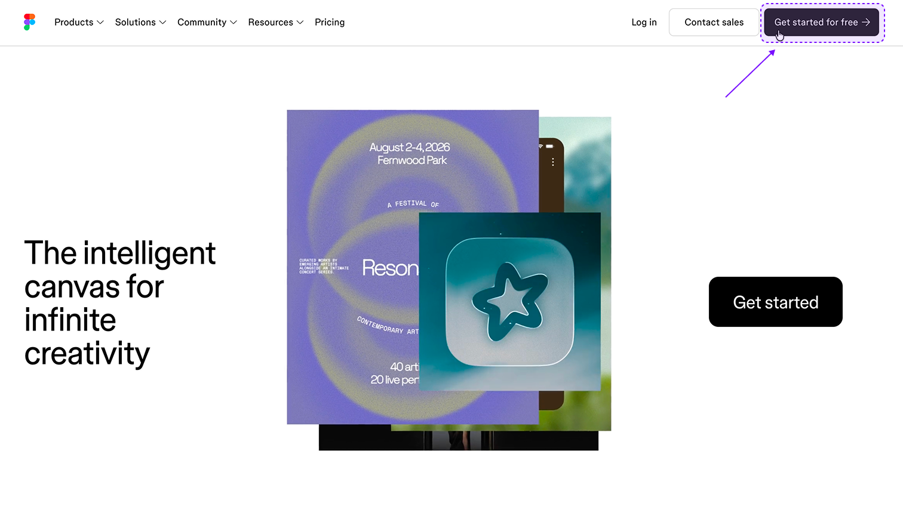
Можно зарегистрироваться через почту, через Google или через SSO, если это корпоративный доступ.
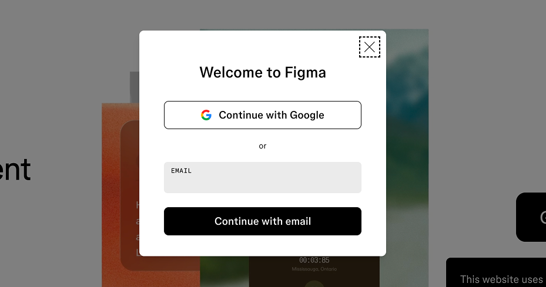
Я рекомендую регистрироваться на отдельную рабочую почту — если вы фрилансите или работаете в нескольких местах, аккаунты Figma потом будет проще разделять.
После регистрации Figma попросит подтвердить почту и задаст пару вопросов — кто вы и зачем вам Figma. Это не критично, можно отвечать честно, это влияет только на онбординг-подсказки.
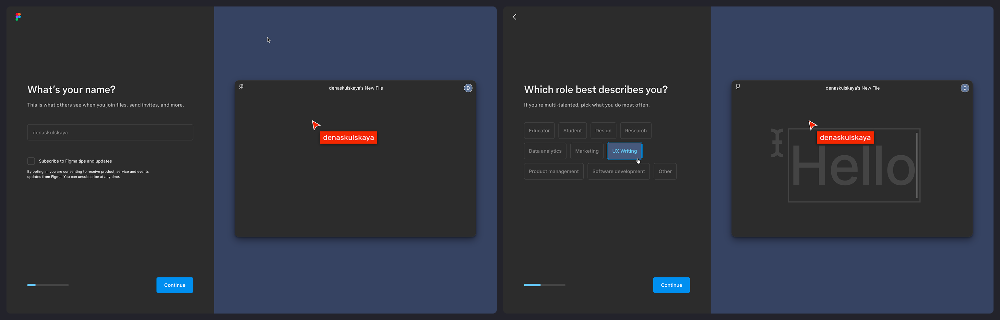
3. Free vs Professional — в чём разница
Бесплатный план долго был ограничен по количеству файлов и версии истории, но сейчас Figma даёт довольно много бесплатно: неограниченное число файлов (Draft) в личном пространстве, базовые DevMode-функции просмотра. А вот платят обычно за:
- расширенную историю версий;
- дополнительные права в команде (кто что может редактировать);
- совместную работу в команде с общими библиотеками;
- FigJam-лимиты и AI-функции.
Для учёбы вам хватит бесплатного личного плана. Платный тариф нужен, если вы работаете в команде на постоянной основе и вам важна история версий и права доступа.
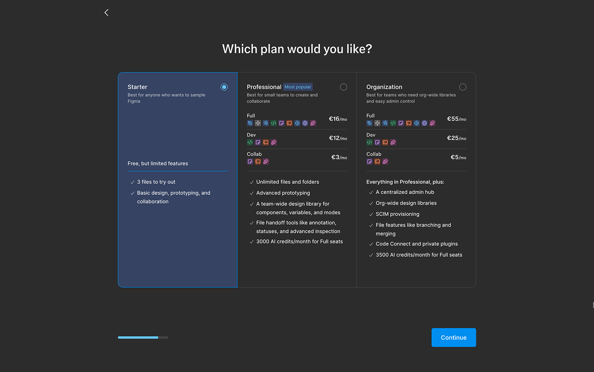
📎 Источник актуальных цен и лимитов: Figma Pricing
4. Где взять платный доступ без своей карты и компании
Частый вопрос: «Хочу платные фичи, но не хочу платить или у меня нет корпоративного плана». Несколько легальных вариантов:
- Figma Education — бесплатный расширенный доступ для студентов и преподавателей по учебной почте (.edu или через подтверждение статуса студента).
- Free trial у команды — если вас пригласили в чужую команду (Team) с платным планом, часть функций команды доступна вам как участнику без личной оплаты.
- Промо-доступы от школ и курсов (иногда партнёрские коды).
Если ничего из этого не подходит — на первое время бесплатного личного плана достаточно, но должна предупредить, что платные фичи нам для базового курса понадобятся, когда мы будем разбирать продвинутые фичи и работу с AI.
Поэтому есть и немного нелегальный вариант — платформы, где можно купить нужную подписку, еще и с российской карты...
Не реклама, нам никто деньги не платил(а хотелось бы), и если не знаете таких платформ, то эти самые распространенные — ggsel и plati market.
📎 Источник: Figma for Education
5. Браузер vs десктоп-приложение
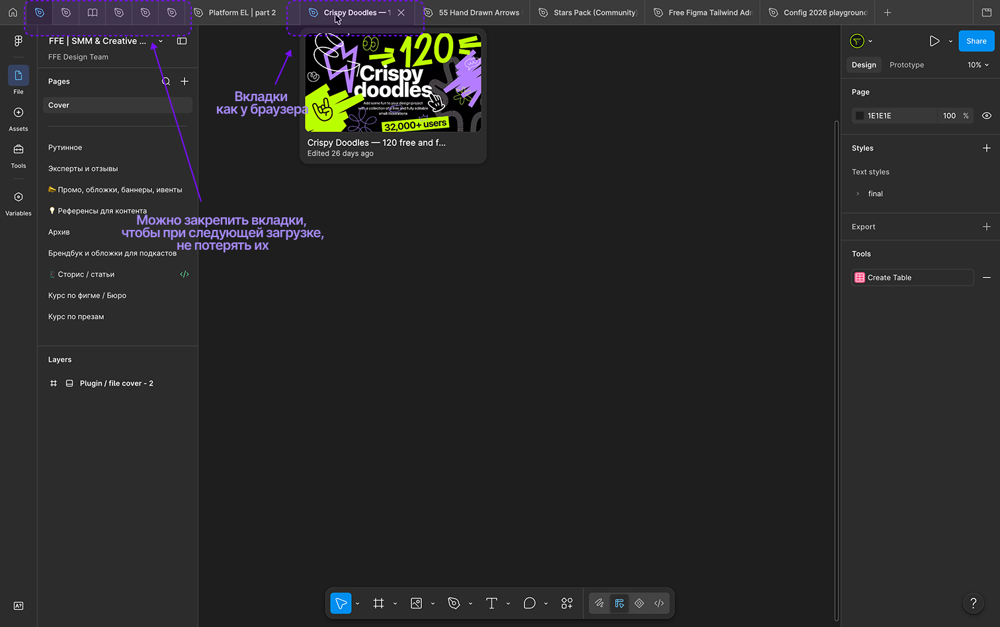
Figma одинаково хорошо работает в браузере и в отдельном приложении. Но у приложения есть удобная штука — вкладки сверху, как в браузере, только это отдельное окно, которое не теряется среди десяти открытых сайтов. Плюс приложение чуть стабильнее держит соединение при плохом интернете и не конкурирует за память с остальными вкладками браузера.
Рекомендация: ставьте десктоп-версию, это ваш основной рабочий инструмент на весь курс :)
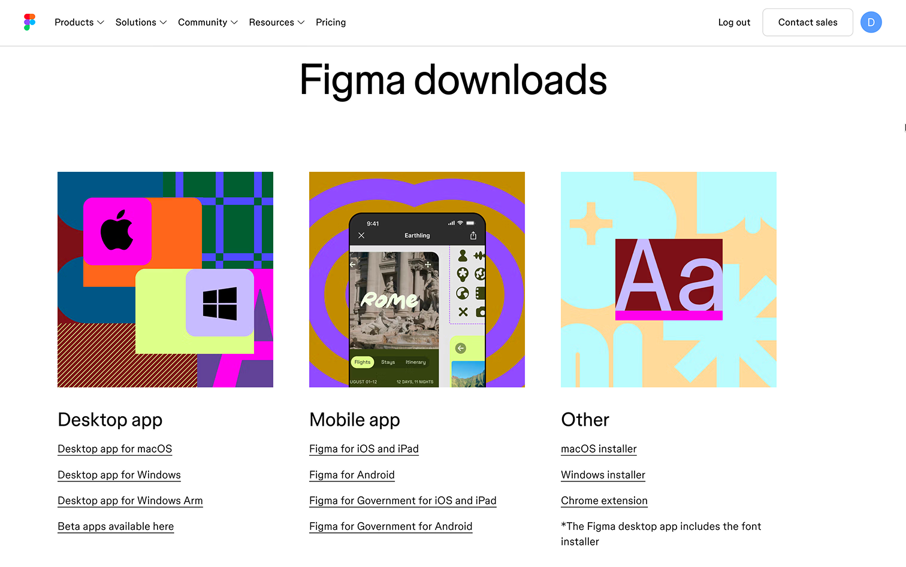
📎 Источник: Figma Downloads
6. Несколько аккаунтов — как и зачем
Если у вас будет личный аккаунт и рабочий (например, для этого курса или для работы) — в десктоп-приложении можно переключаться между аккаунтами или держать оба открытыми в разных окнах браузера (обычное + инкогнито, либо через профили браузера). Это разделяет личные учебные файлы и рабочие проекты и не даёт случайно опубликовать учебный макет в рабочую библиотеку.
7. Домашняя страница: Recents, Drafts, Projects, Teams
После входа вы попадаете на домашнюю страницу. Тут четыре зоны:
Recents — последние открытые файлы, независимо от того, где они лежат;
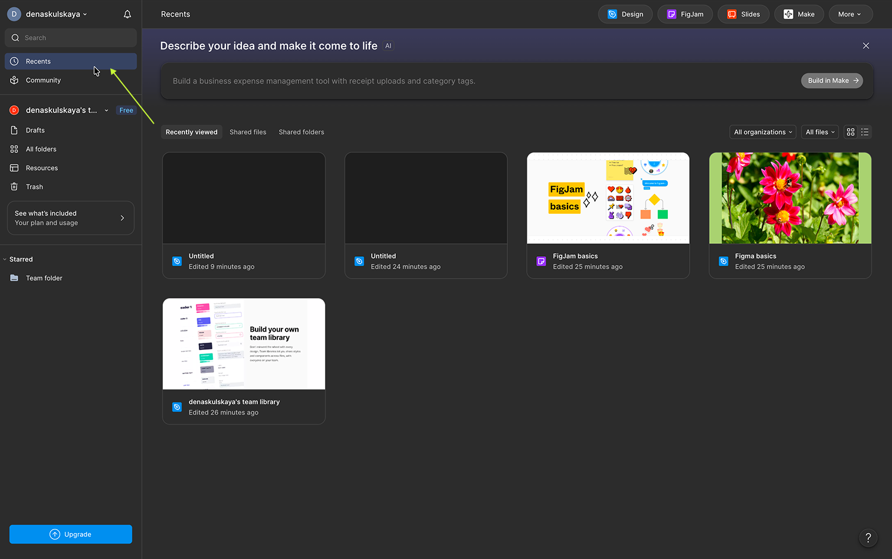
Drafts — ваши личные черновики, видны только вам, пока вы не поделитесь ссылкой;
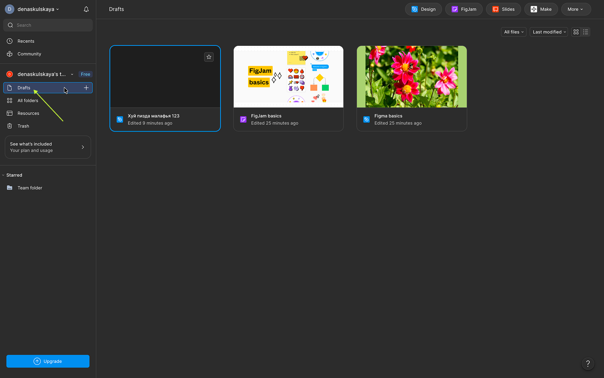
Teams — выбор рабочей команды. Внутри команды — проекты, в проектах — файлы. Сюда же приглашают других участников;
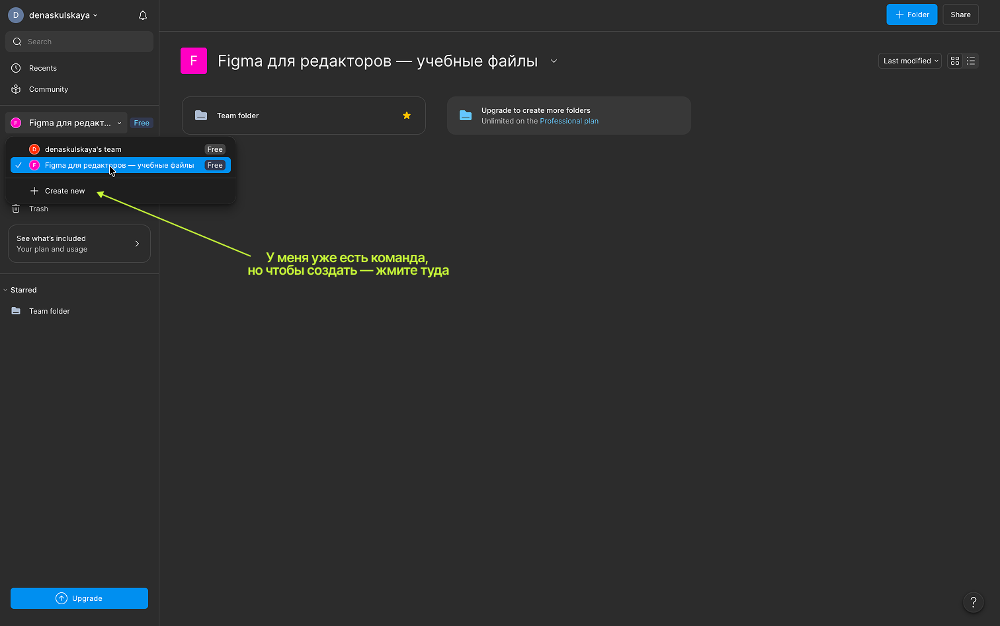
All Projects внутри команды — способ разложить файлы по папкам: например, «Курс», «Личные эксперименты», «Рабочие макеты». В бесплатной подписке нет проектов, заместо них — папки, точнее одна папка, если попробуете создать еще, то фигма предложит вам сменить план подписки. Чтобы показать как выглядят проекты, запалю вам чуть заблюренной корпоративной учетки:
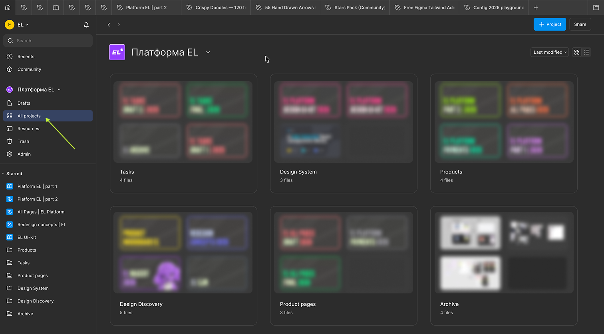
Для нашего курса создадим одну команду или один проект в личном пространстве — назовём его, например, «Figma для редакторов — учебные файлы», и туда будем складывать все домашние задания. Делай раз, делай два:
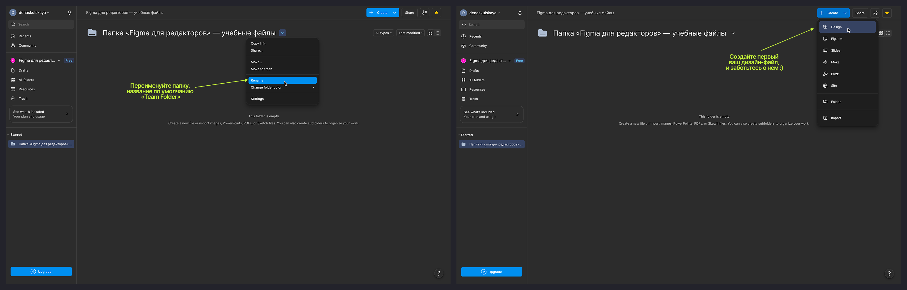
8. Где искать уведомления
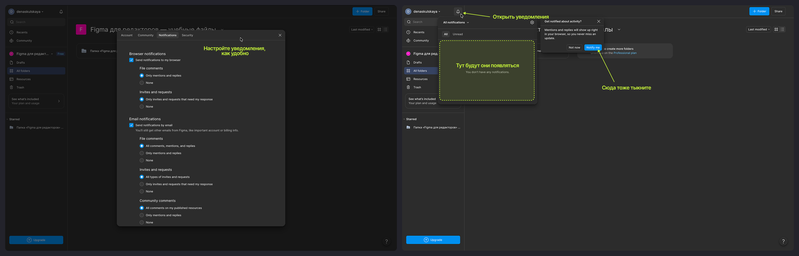
В правом верхнем углу — колокольчик уведомлений. Туда падает всё: кто-то удалил файл, кого-то упомянули в комментарии, вас добавили в команду, кто-то ответил на ваш комментарий. Полезно заглядывать сюда, если файл вдруг «пропал» — велика вероятность, что кто-то из команды его удалил или переместил, и это будет видно именно тут.
Также все уведомления дублируются на почту, некоторые из них, например, удаления файлов и команд имеют ограниченное время для восстановления и только через ссылку из письма на почту, к которой привязана ваш аккаунт Фигмы.
Итог урока
Сегодня мы зарегистрировались в Figma, разобрались с тарифами, поставили приложение и осмотрели домашнюю страницу. В следующем уроке — самое главное: интерфейс Figma изнутри, слои, фреймы, компоненты и всё, без чего дальше просто не сдвинуться.
Домашнее задание:
- Зарегистрировать аккаунт в Figma (если ещё нет).
- Установить десктоп-приложение.
- Создать проект/папку «Figma для редакторов — учебные файлы» и один пустой файл внутри(назовите его максимально угарно, и кидайте в комменты к уроку — будем соревноваться, кто креативнее придумает название).
Источники
- Figma Pricing — актуальные тарифы смотрите здесь
- Figma for Education
- Figma Downloads — ссылка на скачивание приложения